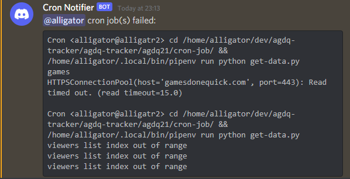

Cron's built-in way of sending you a mail if a job printed something (and likely failed) has never been very useful to me. I barely use email and I don't want to set up my server to send it. Instead, I turn these mails into Discord notifications.
Python's "everything including the kitchen sink" standard library includes an mbox parser, the format used by user mail files, which makes this an easy task.
I read the mails in my mail file, build up a message of any found, and send them along to Discord. All my cron jobs print only when they fail, and I don't get mail from anything else on my server, so I can safely assume all mails are cron job failures.
Here's the script:
#!/usr/bin/env python3 import mailbox import requests WEBHOOK_URL = 'URL_HERE' # collect any mails into a message discord_message = '' for message in mailbox.mbox('/var/mail/USERNAME_HERE'): subject = message['subject'] body = message.get_payload() discord_message += f'{subject}\n{body}\n' # send it to discord if len(discord_message) > 0: content = f'<@USER_ID_HERE> cron job(s) failed: ```{discord_message}```' requests.post(WEBHOOK_URL, json={ 'content': content }) # clear out the mailbox open('/var/mail/alligator', 'w').close()
The result looks like this:

I set up cron to run this script every few minutes (yes I do see the potential for catastrophe there) and now I get mobile and desktop notifications when a cron job fails. A personal Discord server, a webhook, and a Python script, go a long way towards a poor man's alerting and logging system.